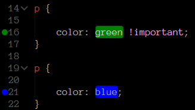
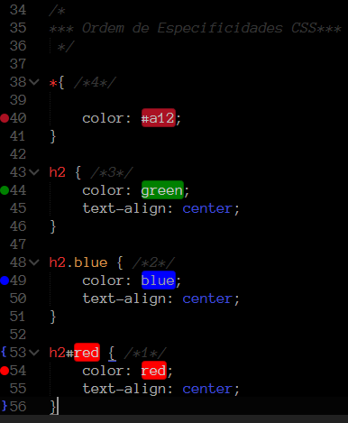

Quando houver 2 seletores iguais, sempre o ultimo sera aplicado. a exeção é quando se aplica o atributo (!important), pois então o atributo marcado sera priorizado, tornando-o mais importante que seu gemeo, porem é um recurso que deve ser evitado.

Se um seletor for mais especifico que outro, logo ele tera sua formatação priorizada. um exemplo disso é quando você define um tipo de fonte para todo o documento, mas dentro de um titulo ou paragrafo, você usa outro tipo de fonte. No geral os seletores tendem a fluir como no exemplo abaixo.
